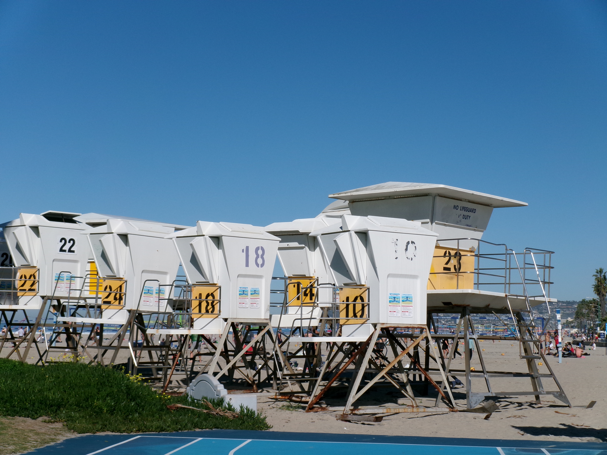

Master’s, Human-Computer Interaction and Design
University of Washington
I'm a product designer with 4+ years of experience spanning digital, analog, and hybrid digital-physical design. I bring both hands-on technical fluency and research to complex design challenges and believe the best experiences are built when data, empathy, and aesthetics work together. I am able to use AI to extend what's possible, explore directions, and ship faster.
Outside of class and work, I enjoy reading (add me on Goodreads!), photography, painting, and rock climbing! Explore my creative interests here!
English (Native), Bulgarian (Fluent), French (Working)
